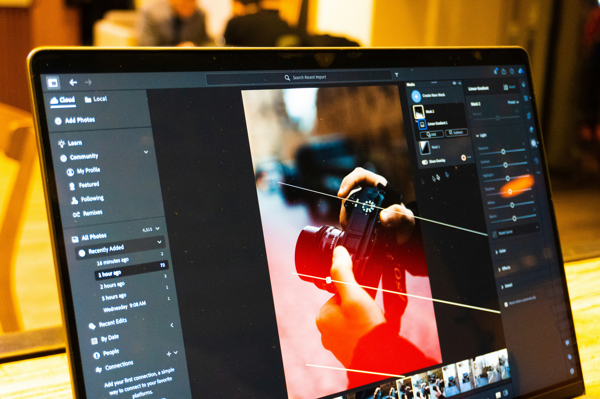

El poder del revelado RAW: De la cámara al archivo final
El proceso fotográfico no termina al presionar el disparador. El archivo RAW almacena toda la información cruda capturada por el sensor de la cámara, ofreciendo un margen muy superior de recuperación en altas luces y sombras.
Utilizar herramientas de revelado no destructivo permite calibrar el balance de blancos, ajustar las curvas de tonos y perfilar la paleta de colores cromáticos con total fidelidad a la visión artística inicial.
Dominar la postproducción es el puente definitivo entre una buena fotografía y una obra visual impactante y profesional.
← Regresar al inicio